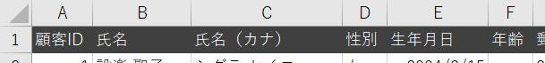

VBAクラスの作り方：列名のプロパティを自動作成する
クラスに列名のプロパティを作成することで、入力支援が使えてコーディングが楽になりますが、
列数が多くなればVBAの記述量が増え、コーディングが大変になります。
その事前準備があまりに大変ではやる気が失せてクラス作るのが面倒になってしまいます。
こういう方法もあるということを紹介しているものです、
同様のプロパティをコピペで大量生産する必要があるような場合の参考になれば良いということです。
VBAクラスの作り方：列名の入力支援と列移動対応
Option Explicit
Private Ws As Worksheet
Public Property Set Worksheet(ByVal argWs As Worksheet)
Set Ws = argWs
End Property
Public Property Get 顧客ID() As Long
Static c As Long
If c <> 0 Then 顧客ID = c: Exit Property
c = getColumn("nm顧客ID")
顧客ID = c
End Property
・・・列数だけプロパティが並んでいる・・・
Public Property Get 備考() As Long
Static c As Long
If c <> 0 Then 備考 = c: Exit Property
c = getColumn("nm備考")
備考 = c
End Property
Private Function getColumn(ByVal argName As String) As Long
On Error Resume Next
getColumn = Ws.Range(argName).Column
If Err Then
MsgBox "名前定義不正：" & argName
End
End If
End Function
上のVBAクラスの、
Public Property Get 顧客ID() As Long
～
Public Property Get 備考() As Long
ここは、名称だけが違うプロパティが繰り返されています。
コピペしつつ名称を変更すれば良いのですが、列数が多くなったら結構大変です。
前もって、以下に掲載しておきます。
Private Function editName(ByVal strName As String) As String
'記号の一覧は使用しそうな記号を適当に記載
'名前定義とプロパティ名に使えない記号は_に置換
Const cnsSymbol As String = "!""#$%&'()=-~^|\`@{[+;*:}]<,>.?/\ "
Dim strSymbol As String
'CrLfは消去
strName = Replace(Replace(strName, vbCr, ""), vbLf, "")
'空白（スペース）は消去
strName = Replace(Replace(strName, vbCr, " "), vbLf, " ")
'全角記号も対象
strSymbol = cnsSymbol & StrConv(cnsSymbol, vbWide)
'記号を_に置換
Dim i As Integer
For i = 1 To Len(strSymbol)
strName = Replace(strName, Mid(strSymbol, i, 1), "_")
Next
If Right(strName, 1) = "_" Then
strName = Left(strName, Len(strName) - 1)
End If
editName = strName
End Function
全体の機能と構成
サンプルして使うシート

氏名
氏名（カナ）
性別
生年月日
年齢
郵便番号
都道府県
電話番号
備考
・シートの列タイトルからクラスファイル(.cls)を出力
・クラスファイル(.cls)のインポート
・全てを連続実行できるように変更
・列番号のプロパティを自動作成するVBAの完成コード
作成済のクラス(clsColumn)をエクスポートして雛形にする
VBAクラスの作り方：列名の入力支援と列移動対応
出力先はVBAを書いているブック(ThisWorkbook)と同一フォルダに入れてください。
VERSION 1.0 CLASS
BEGIN
MultiUse = -1 'True
END
Attribute VB_Name = "clsColumns"
Attribute VB_GlobalNameSpace = False
Attribute VB_Creatable = False
Attribute VB_PredeclaredId = False
Attribute VB_Exposed = False
Option Explicit
Private Ws As Worksheet
Public Property Set Worksheet(ByVal argWs As Worksheet)
Set Ws = argWs
End Property
Public Property Get 顧客ID() As Long
Static c As Long
If c <> 0 Then 顧客ID = c: Exit Property
c = getColumn("nm顧客ID")
顧客ID = c
End Property
・・・途中省略・・・
Public Property Get 備考() As Long
Static c As Long
If c <> 0 Then 備考 = c: Exit Property
c = getColumn("nm備考")
備考 = c
End Property
Private Function getColumn(ByVal argName As String) As Long
On Error Resume Next
getColumn = Ws.Range(argName).Column
If Err Then
MsgBox "名前定義不正：" & argName
End
End If
End Function
このようになっていますので、
これを以下のように修正します。
VERSION 1.0 CLASS
BEGIN
MultiUse = -1 'True
END
Attribute VB_Name = "【クラス名】"
Attribute VB_GlobalNameSpace = False
Attribute VB_Creatable = False
Attribute VB_PredeclaredId = False
Attribute VB_Exposed = False
Option Explicit
Private Ws As Worksheet
Public Property Set Worksheet(ByVal argWs As Worksheet)
Set Ws = argWs
End Property
【追加プロパティ】
Private Function getColumn(ByVal argName As String) As Long
On Error Resume Next
getColumn = Ws.Range(argName).Column
If Err Then
MsgBox "名前定義不正：" & argName
End
End If
End Function
Option Explicitの手前までは、
クラスを管理するための内部コードになっています。
内容は特に気にするほどのものはありません。
↓
Attribute VB_Name = "【クラス名】"
～ Public Property Get 備考() As Long
↓
【追加プロパティ】
このファイルをクラスのひな型として使います。
【・・・】は見たときにすぐにわかるような文字にしているだけで、
他と区別できるユニークな文字列ならなんでも構いません。
シートの列タイトルからクラスファイル(.cls)を出力
clsColumns.clsをひな型として、
・クラス名の設定
・全列のプロパティを追加
以上を行い、シート名.clsとして出力します。
Private Sub CreateVbaProperty()
'前提環境設定
Dim Ws As Worksheet '対象シート
Dim OutPath As String '.cls出力フォルダ
Dim NameRow As String '名前定義の行
Set Ws = Worksheets("顧客マスタ")
NameRow = 1
OutPath = ThisWorkbook.Path & "\"
'クラス名の決定
Dim ClsName As String
Dim ClsFile As String
ClsName = "clsC" & editName(Ws.Name)
ClsFile = ClsName & ".cls"
'プロパティの雛形：作成済のクラスをコピペして編集
Const cProp As String = _
"Public Property Get 【列名】() As Long" & vbCrLf & _
" Static c As Long" & vbCrLf & _
" If c <> 0 Then 【列名】 = c: Exit Property" & vbCrLf
& _
" c = getColumn(""nm【列名】"")" & vbCrLf & _
" 【列名】 = c" & vbCrLf & _
"End Property" & vbCrLf & vbCrLf
'シートの列タイトルの名前定義からProperty作成
Dim i As Long
Dim sName As String '列名：プロパティ名
Dim sProp As String 'プロパティ全体を入れる
For i = 1 To Ws.Cells(NameRow, Ws.Columns.Count).End(xlToLeft).Column
If Ws.Cells(NameRow, i) <> "" Then
sName = editName(Ws.Cells(NameRow, i))
sProp = sProp & Replace(cProp, "【列名】", sName)
End If
Next
'clsColumns.clsを雛形としてclsファイルを作成
Dim objFSO As New FileSystemObject
Dim objTS As TextStream
Dim sClass As String
Dim sFile As String
'clsColumns.clsを読み込む
sFile = OutPath & "clsColumns.cls"
Set objTS = objFSO.OpenTextFile(Filename:=sFile)
sClass = CStr(objTS.ReadAll)
'【クラス名】【追加プロパティ】置換
sClass = Replace(sClass, "【クラス名】", ClsName)
sClass = Replace(sClass, "【追加プロパティ】", sProp)
'.clsファイルを出力
sFile = OutPath & ClsFile
Set objTS = objFSO.CreateTextFile(Filename:=sFile)
objTS.Write sClass
objTS.Close
Set objFSO = Nothing
Set objTS = Nothing
End Sub
変数名は短めにしています。
長いとWEB掲載したときには余計に見づらくなってしまうので。
また、変数の初期化は明示的に初期化するほうが良い場合もありますが、
掲載コードが長くなるので、既定をそのまま使っています。
これは、既に作成してあるクラスから、列のプロパティをコピペし、
列名部分を【列名】に変更し、改行(VbCrLf)を追加したものです。
【クラス名】はシート名から作成したものに置換
【追加プロパティ】は列名から作成したプロパティ全体で置換
そして、clsCシート名.clsで出力しています。
クラスファイル(.cls)のインポート
出力したクラスファイル、clsCシート名.cls
これがあればインポートすれば良いのですが、
せっかくなので自動でインポートするところまでやってみましょう。
これにチェックを付けておく必要があります。
もちろん、そこを突いたプログラムを動作させなければ問題とはなりません。
とはいえ、いつ何時そのような事態があるとも限りませんので、
普段はオフにしておき、必要な時だけオンにすることをお勧めしておきます。
.clsファイルをインポートします。
Private Sub ClassImport()
'.clsファイル
Dim ClsFile As String
ClsFile = ThisWorkbook.Path & "\clsC顧客マスタ.cls"
'.clsのフルパスから、拡張子を除いたファイル名を作成
Dim ClsName As String
ClsName = Dir(ClsFile)
If ClsName = "" Then
MsgBox ".clsファイルがありません。"
Exit Sub
End If
ClsName = Left(ClsName, InStrRev(ClsName, ".") - 1)
'インポート
With ThisWorkbook.VBProject
On Error Resume Next '最初はclsColumnsがないので
'元のclsはリネームしてバックアップ
.VBComponents(ClsName).Name = ClsName & "_" & Format(Now(), "yyyymmddhhmmss")
On Error GoTo 0
.VBComponents.Import ClsFile
End With
End Sub
.clsファイルのフルパスから、拡張子を除いたファイル名を作成していますが、
既に同名のクラスに対する処理を行うときに必要なために作成しています。
ここでは少々回りくどい方法をとっていますが、一つの方法として紹介をかねて書いたものです。
記述としては、FileSystemObjectを使ったほうが簡単に書けます。
元のclsはバックアップの意味でリネームして残しています。
リネームせずに削除する場合は、
.VBComponents.Remove .VBComponents(ClsName)
これで削除できます。
作成途中のテスト段階では、間違って消してしまわないように気を付けてください。
複数回実行すると、リネームされたクラスがそのたびに増えていきます。
無駄なものを入れっぱなしにしておくと後でわからなくなりますので、
適宜解放してください。
全てを連続実行できるように変更
ここまで、それぞれ単体のプロシージャーとして、
2つのプロシージャーを紹介してきました。
前回作成した名前定義設定プロシージャと合わせて、一気に全てできるようにします。
・名前定義を設定
・シートの列タイトルからクラスファイル(.cls)を出力
・クラスファイル(.cls)のインポート
この一連の処理をまとめて実行できるようにします。
個別のプロシージャーで設定している情報を、このメインで設定して引き継ぐようにします。
必要な情報は、
・対象シート
・列タイトル行（名前定義行）
・.cls出力フォルダ
以上の3つになります。
出力フォルダは、ThisWorkbook.Pathで固定になっていますが、
今後変更したいときの為に、せっかくなのでメインで指定できるようにします。
Private Sub CreateVbaProperty()
'前提環境設定
Dim Ws As Worksheet '対象シート
Dim OutPath As String '.cls出力フォルダ
Dim NameRow As String '名前定義の行
Set Ws = Worksheets("顧客マスタ")
NameRow = 1
OutPath = ThisWorkbook.Path & "\"
'クラス名の決定
・・・
多少の違いはあっても、概ねこのような感じで先頭の方で指定しています。
そこで、これを以下のように、引数で受け取るように変更します。
CreateVbaPropertyについては、
呼び出し元に最終的に決定したクラス名を戻すようにFunctionにしました。
（値を戻す部分等は、完成コードをご覧ください。）
Private Function CreateVbaProperty(ByVal Ws As Worksheet, _
ByVal NameRow As Long, _
ByVal OutPath As String) As String
'クラス名の決定
・・・
前回作成した名前定義とclsインポートについては、
Functionにする必要がないので、引数への変更だけになります。
今回のように単体でプロシージャーを作成し後から共通する部分を引数化する手法は、
最初の作成しやすさもありますが、
大きくなってしまったプロシージャーを分割するときに必要な手法になります。
これは必ず必要になってくる手法ですので、ぜひマスターすることをお勧めします。
列番号のプロパティを自動作成するVBAの完成コード
Option Explicit
'名前定義設定とclsファイル作成とインポート
Sub NameAndProperty()
Dim Ws As Worksheet '対象シート
Dim NameRow As Long '名前定義の行
Dim OutPath As String '.cls出力フォルダ
Dim ClsName As String 'クラス名
OutPath = ThisWorkbook.Path & "\"
Set Ws = ThisWorkbook.Worksheets("顧客マスタ")
NameRow = 1 '名前定義の行
'名前定義
Call SetTitleName(Ws, NameRow)
'.cls出力
ClsName = CreateVbaProperty(Ws, NameRow, OutPath)
If MsgBox("VBEの操作を許可しますか?", vbYesNo, "確認") = vbYes Then
Call ClassImport(OutPath & ClsName)
MsgBox "クラス(.cls)をインポートしました。"
Else
MsgBox "手動でクラス(.cls)をインポートしてください。"
End If
End Sub
'表の列タイトルのセルにタイトル文字列より名前定義設定
Private Sub SetTitleName(ByVal Ws As Worksheet, _
ByVal NameRow As Long)
Const strPre As String = "nm" 'プリフィックスなので何でも良い
Dim strName As String
Dim i As Long
With Ws
For i = 1 To .Cells(NameRow, .Columns.Count).End(xlToLeft).Column
If .Cells(NameRow, i) <> "" Then
strName = editName(.Cells(NameRow, i))
.Names.Add Name:=strPre & strName, _
RefersTo:="=" & .Cells(NameRow, i).Address
End If
Next
End With
End Sub
'表の列タイトルの名前定義からclsファイル作成
Private Function CreateVbaProperty(ByVal Ws As Worksheet, _
ByVal NameRow As Long, _
ByVal OutPath As String) As String
'クラス名の決定
Dim ClsName As String
ClsName = "clsC" & editName(Ws.Name)
CreateVbaProperty = ClsName & ".cls"
'プロパティの雛形：作成済のクラスをコピペして編集
Const cProp As String = _
"Public Property Get 【列名】() As Long" & vbCrLf & _
" Static c As Long" & vbCrLf & _
" If c <> 0 Then 【列名】 = c: Exit Property" & vbCrLf & _
" c = getColumn(""nm【列名】"")" & vbCrLf & _
" 【列名】 = c" & vbCrLf & _
"End Property" & vbCrLf & vbCrLf
'シートの列タイトルの名前定義からProperty作成
Dim i As Long
Dim sName As String '列名：プロパティ名
Dim sProp As String 'プロパティ全体を入れる
For i = 1 To Ws.Cells(NameRow, Ws.Columns.Count).End(xlToLeft).Column
If Ws.Cells(NameRow, i) <> "" Then
sName = editName(Ws.Cells(NameRow, i))
sProp = sProp & Replace(cProp, "【列名】", sName)
End If
Next
'clsColumns.clsを雛形としてclsファイルを作成
Dim objFSO As New FileSystemObject
Dim objTS As TextStream
Dim sClass As String
Dim sFile As String
'clsColumns.clsを読み込む
sFile = OutPath & "clsColumns.cls"
Set objTS = objFSO.OpenTextFile(Filename:=sFile)
sClass = CStr(objTS.ReadAll)
'【クラス名】【追加プロパティ】置換
sClass = Replace(sClass, "【クラス名】", ClsName)
sClass = Replace(sClass, "【追加プロパティ】", sProp)
'.clsファイルを出力
sFile = OutPath & CreateVbaProperty
Set objTS = objFSO.CreateTextFile(Filename:=sFile)
objTS.Write sClass
objTS.Close
Set objFSO = Nothing
Set objTS = Nothing
End Function
'クラスファイル(.cls)をインポート
Private Sub ClassImport(ByVal ClsFile As String)
'.clsのフルパスから、拡張子を除いたファイル名を作成
Dim ClsName As String
ClsName = Dir(ClsFile)
If ClsName = "" Then
MsgBox ".clsファイルがありません。"
Exit Sub
End If
ClsName = Left(ClsName, InStrRev(ClsName, ".") - 1)
'インポート
With ThisWorkbook.VBProject
On Error Resume Next '最初はclsColumnsがないので
'元のclsはリネームしてバックアップ
.VBComponents(ClsName).Name = ClsName & "_" & Format(Now(), "yyyymmddhhmmss")
On Error GoTo 0
.VBComponents.Import ClsFile
End With
End Sub
'記号は_に変換：名前定義とプロパティ名に使うので
Public Function editName(ByVal strName As String) As String
'記号の一覧は使用しそうな記号を適当に記載
'名前定義とプロパティ名に使えない記号は_に置換
Const cnsSymbol As String = "!""#$%&'()=-~^|\`@{[+;*:}]<,>.?/\ "
Dim strSymbol As String
'CrLfは消去
strName = Replace(Replace(strName, vbCr, ""), vbLf, "")
'空白（スペース）は消去
strName = Replace(Replace(strName, vbCr, " "), vbLf, " ")
'全角記号も対象
strSymbol = cnsSymbol & StrConv(cnsSymbol, vbWide)
'記号を_に置換
Dim i As Integer
For i = 1 To Len(strSymbol)
strName = Replace(strName, Mid(strSymbol, i, 1), "_")
Next
If Right(strName, 1) = "_" Then
strName = Left(strName, Len(strName) - 1)
End If
editName = strName
End Function
先頭の、
Sub NameAndProperty()
これが起動するメインプロシージャーです。
最初にclsインポートについての確認メッセージを出すようにしてみました。
シート数が多いときはループする等で対応すれば良いでしょう。
最後に
今回は、クラスを作るVBAの紹介でした。
クラスを作るといっても、ロジックは自動では作れませんので、
（AIならできるようになる・・・）
単純な定型文の繰り返し等の記述をVBAで行うということです。
これは一度作ってしまえば使い回しができますし、
これでベースを作って後は手修正するという使い方でも良いと思います。
こういうツールを一度作っておけば、その後はコーディングの手間が大幅に減らせます。
※シートで関数を設定して文字列を大量に生成する方法もあります。
SUBSTITUTE関数で置換する方法になります。
細かいことはできませんが、簡単にやれる利点があり応用範囲が広いので、
ぜひ覚えておいてください。
今回は名前定義が関係していることもありVBAで対応しました。
コピペできるものはコピペする、繰り返しコピペと修正があるならツール作成を考える。
このように段階的に考えてみると、全体の作業量が大きく変わってくるはずです。
同じテーマ「VBAクラス入門」の記事
VBAクラス入門：クラスとは?オブジェクト指向とは?
クラスを使った全ブック（他ブック）のイベント補足
VBAクラスの作り方：列名の入力支援と列移動対応
VBAクラスの作り方：列名のプロパティを自動作成する
VBAクラスの作り方：独自Rangeっぽいものを作ってみた
クラスとイベントとマルチプロセス並列処理
クラスとCallByNameとポリモーフィズム(多態性)
オートフィルターを退避回復するVBAクラス
オートフィルター退避回復クラスを複数シート対応させるVBAクラス
コレクション（Collection）の並べ替え（Sort）に対応するクラス
VBAクラスのAttributeについて（既定メンバーとFor Each）
新着記事NEW ・・・新着記事一覧を見る
VBA100本ノック 100本目：WEBから100本ノックのリストを取得｜VBA練習問題（3月3日）
VBA100本ノック 99本目：自動席替え（行列と前後左右が全て違うように）｜VBA練習問題（3月2日）
VBA100本ノック 98本目：席替えルールが守られているか確認｜VBA練習問題（3月1日）
VBA100本ノック 97本目：Accessデータを取得（グループ集計）｜VBA練習問題（2月27日）
VBA100本ノック 96本目：Accessデータを取得（マスタ結合&抽出）｜VBA練習問題（2月26日）
VBA100本ノック 95本目：図形のテキストを検索するフォーム作成｜VBA練習問題（2月24日）
VBA100本ノック 94本目：表範囲からHTMLのtableタグを作成｜VBA練習問題（2月23日）
VBA100本ノック 93本目：複数ブックを連結して再分割｜VBA練習問題（2月22日）
VBA100本ノック 92本目：セルの色を16進で返す関数｜VBA練習問題（2月20日）
VBA100本ノック 91本目：時間計算（残業時間の月間合計）｜VBA練習問題（2月19日）
アクセスランキング ・・・ ランキング一覧を見る
1.最終行の取得（End,Rows.Count）｜VBA入門
2.RangeとCellsの使い方｜VBA入門
3.変数宣言のDimとデータ型｜VBA入門
4.マクロって何？VBAって何？｜VBA入門
5.Range以外の指定方法（Cells,Rows,Columns）｜VBA入門
6.セルのコピー&値の貼り付け（PasteSpecial）｜VBA入門
7.繰り返し処理（For Next)｜VBA入門
8.セルに文字を入れるとは（Range,Value）｜VBA入門
9.マクロはどこに書くの（VBEの起動）｜VBA入門
10.とにかく書いてみよう（Sub,End Sub）｜VBA入門
このサイトがお役に立ちましたら「シェア」「Bookmark」をお願いいたします。
記述には細心の注意をしたつもりですが、
間違いやご指摘がありましたら、「お問い合わせ」からお知らせいただけると幸いです。
掲載のVBAコードは動作を保証するものではなく、あくまでVBA学習のサンプルとして掲載しています。
掲載のVBAコードは自己責任でご使用ください。万一データ破損等の損害が発生しても責任は負いません。